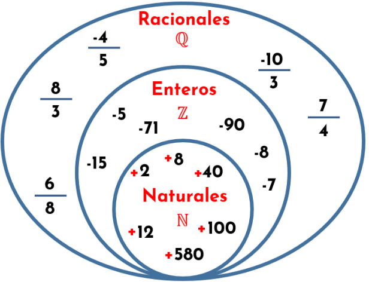
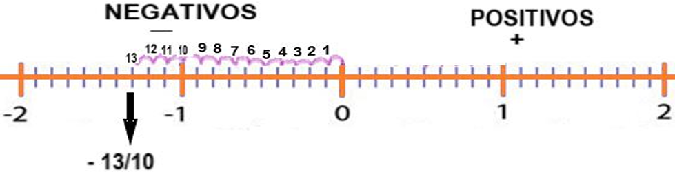

Los números racionales son aquellos que pueden expresarse como una fracción. El numerador y el denominador son números enteros y el denominador no es cero. En este grupo también estan incluidos los números enteros y los números decimales que tienen una representación finita o una representación decimal periódica.
Dentro de los números racionales no se consideran a los números cuyo resultado es un decimal infinito no periódico, como la raíz cuadrada de 2 (√2).
Ejemplo
1. ¿Cuál de los siguientes números es racional?
2. ¿Cuál de los siguientes números enteros también es racional?
3. ¿Qué fracción representa al número decimal 0,5?
4. ¿Qué número se encuentra entre 1 y 2 en la recta numérica?
5. ¿Cuál es el número racional equivalente a −0,75?
6. ¿Cuál de los siguientes números está más a la izquierda en la recta numérica?
7. Ordena de menor a mayor: 1/2, −1/4, 3/4, 0
8. Si un cuadrilátero tiene base 15u y altura 4u, su área es:
9. Si en la recta numérica el punto A está en −1/2 y el punto B en 1/4, ¿cuál es la distancia entre ambos?